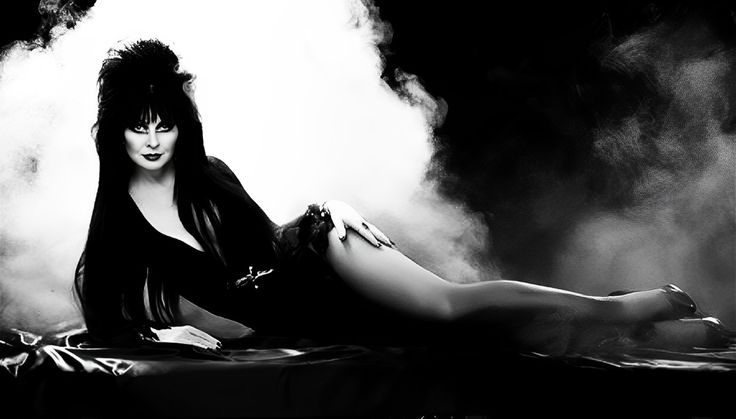
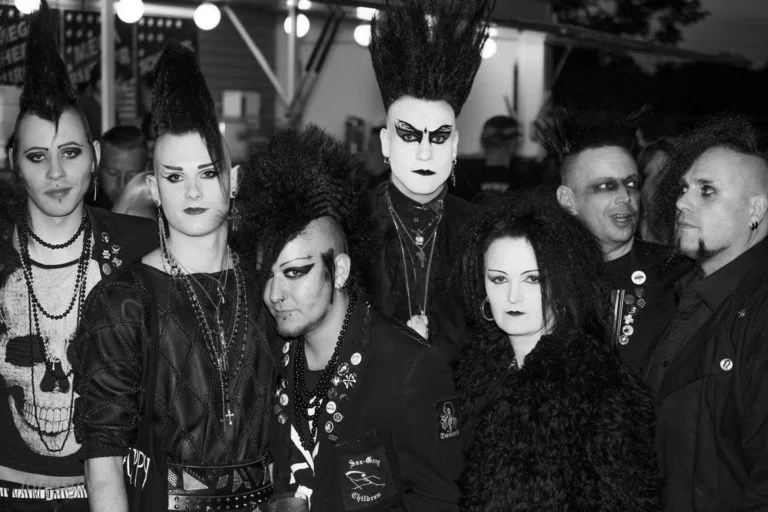

📜 Origen y Nacimiento (Post-Punk)
La subcultura gótica emergió a finales de los años *70* y principios de los *80* en el Reino Unido, directamente como una escisión y evolución del movimiento *Post-Punk*. Se consolidó en torno a una nueva estética musical más oscura, introspectiva y atmosférica, en contraste con la rabia directa del Punk.

Las bandas pioneras, como *Siouxsie and the Banshees* y *Joy Division* (pre-New Order), sentaron las bases sónicas y visuales del movimiento. El término "Goth" fue acuñado por la prensa musical para describir el sonido lúgubre de estas bandas.
---
🎶 Música y Estilos Musicales
El *Rock Gótico* (Gothic Rock) es el corazón del movimiento. Se caracteriza por líneas de bajo prominentes, guitarras atmosféricas (a menudo con chorus o delay) y letras que abordan temas de melancolía, existencialismo, romance oscuro y lo sobrenatural.
Géneros Clave:
- *Rock Gótico:* (The Cure, The Sisters of Mercy, Bauhaus).
- *Deathrock:* Más influenciado por el punk, con un toque macabro (Christian Death).
- *Darkwave/Ethereal Wave:* Más atmosférico y con elementos electrónicos (Cocteau Twins, Dead Can Dance).
- *Industrial/EBM:* Aunque es un género separado, a menudo se cruza y comparte público (Front 242).
---
⚫ Estética y Moda
La estética gótica es quizás su rasgo más reconocible. Se inspira en el Romanticismo, el arte funerario y la literatura victoriana. Es una declaración visual de individualidad y rechazo a las normas de moda dominantes.

Elementos Comunes:
- *Colores:* Predominio del *negro*, a menudo combinado con rojo oscuro, morado, o blanco pálido.
- *Materiales:* Terciopelo, encaje, cuero, vinilo y malla.
- *Maquillaje:* Piel pálida (buscando un aspecto enfermizo o aristocrático), delineador de ojos negro prominente y labial oscuro.
- *Accesorios:* Cruces, símbolos ankh, joyería de plata o peltre, y botas de plataforma.
---
🌎 Impacto Cultural y Legado
Aunque a menudo malentendida o trivializada, la subcultura gótica ha tenido un impacto cultural significativo:
- *Influencia en la Moda:* Diseñadores de alta costura como Alexander McQueen y Rick Owens han incorporado elementos góticos en sus colecciones.
- *Literatura y Arte:* Ha revitalizado el interés en la literatura gótica clásica (Poe, Shelley, Stoker) y ha generado una vasta producción artística propia (pintura, fotografía, poesía).
- *Cine y TV:* Ha influido en la estética de películas como El Cuervo, Eduardo Manostijeras y muchas obras de Tim Burton.
- *Comunidad Global:* Los góticos forman una red global de comunidades que se conectan a través de festivales, clubes y, cada vez más, plataformas en línea.
*Nota sobre Informática:* La subcultura ha adoptado herramientas digitales para la difusión musical y la creación de comunidades, manteniendo vivos géneros musicales que no son populares en el mainstream.